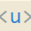
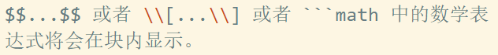
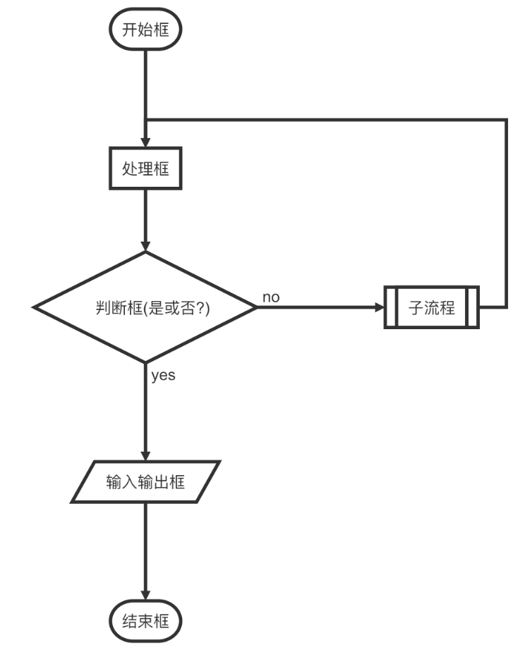
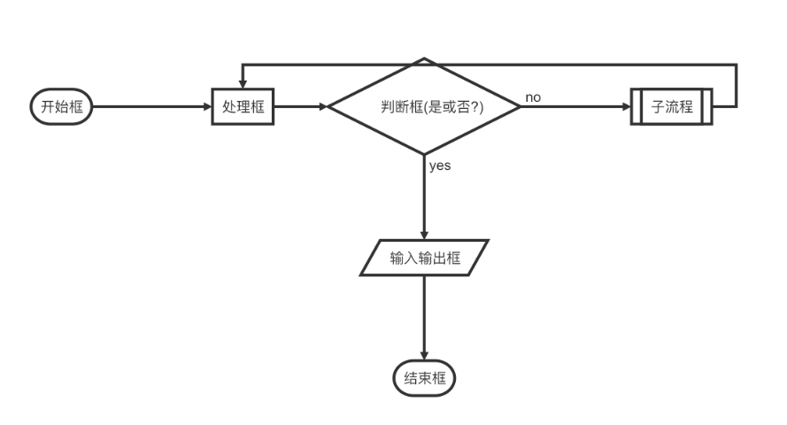
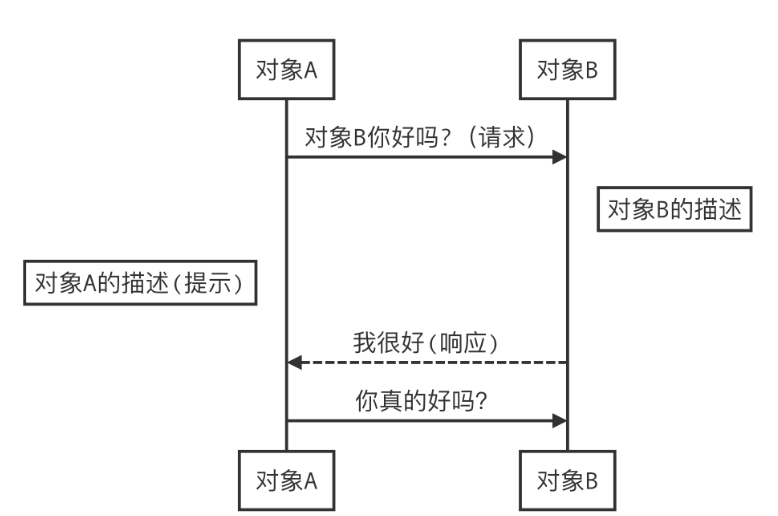
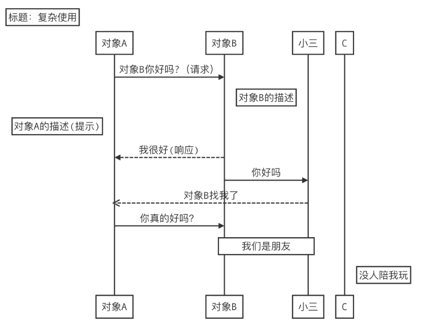

# 引入
跟随菜鸟教程学习，所以基本一致，自用
标题
使用 = 和 - 标记一级和二级标题
我展示的是一级标题
=================
我展示的是二级标题
-----------------
```)
使用 # 号标记
```markdown
# 一级标题
## 二级标题
### 三级标题
#### 四级标题
##### 五级标题
###### 六级标题
```)
# 段落格式
段落的换行是使用两个以上空格加上回车。
当然也可以在段落后面使用一个空行来表示重新开始一个段落。
## 字体
```markdown
*斜体文本*
_斜体文本_
**粗体文本**
__粗体文本__
***粗斜体文本***
___粗斜体文本___斜体文本 斜体文本 粗体文本 粗体文本 粗斜体文本 粗斜体文本
分割线
你可以在一行中用三个以上的星号、减号、底线来建立一个分隔线，行内不能有其他东西。你也可以在星号或是减号中间插入空格。下面每种写法都可以建立分隔线：
***
* * *
*****
- - -
----------删除线
只需要在文字的两端加上两个波浪线 ~~ 即可
RUNOOB.COM
GOOGLE.COM
~~BAIDU.COM~~RUNOOB.COM
GOOGLE.COM
BAIDU.COM
下划线
下划线可以通过 HTML 的

)标签来实现：<u>带下划线文本</u>带下划线文本
脚注
对文本的补充说明。
[^要注明的文本]
[^RUNOOB]。
[^RUNOOB]: 燊楽 -- 噜啦啦创建脚注格式类似这样 1。
列表
无序列表使用星号(*)、加号(+)或是减号(-)作为列表标记，这些标记后面要添加一个空格，然后再填写内容：
无序列表
* 第一项
* 第二项
* 第三项
+ 第一项
+ 第二项
+ 第三项
- 第一项
- 第二项
- 第三项- 第一项
- 第二项
- 第三项
- 第一项
- 第二项
- 第三项
- 第一项
- 第二项
- 第三项
有序列表
1. 第一项
2. 第二项
3. 第三项- 第一项
- 第二项
- 第三项
列表嵌套
1. 第一项:
- 第一项嵌套的第一个元素
- 第一项嵌套的第二个元素
2. 第二项:
- 第二项嵌套的第一个元素
- 第二项嵌套的第二个元素- 第一项:
- 第一项嵌套的第一个元素
- 第一项嵌套的第二个元素
- 第二项:
- 第二项嵌套的第一个元素
- 第二项嵌套的第二个元素
区块
Markdown 区块引用是在段落开头使用 > 符号 ，然后后面紧跟一个空格符号：
> 区块引用
> 菜鸟教程
> 学的不仅是技术更是梦想区块引用
菜鸟教程
学的不仅是技术更是梦想
区块嵌套
> 最外层
> > 第一层嵌套
> > > 第二层嵌套最外层
第一层嵌套
第二层嵌套
区块中使用列表
> 区块中使用列表
> 1. 第一项
> 2. 第二项
> + 第一项
> + 第二项
> + 第三项区块中使用列表
- 第一项
- 第二项
- 第一项
- 第二项
- 第三项
列表中使用区块
* 第一项
> 菜鸟教程
>> 学的不仅是技术更是梦想
* 第二项- 第一项
菜鸟教程
学的不仅是技术更是梦想
- 第二项
代码
如果是段落上的一个函数或片段的代码可以用反引号把它包起来（`），例如：
`printf()` 函数printf() 函数
代码区块
``c
//按理说要放三个```,要改
``
链接
[链接名称](链接地址)
或者
<链接地址>或者
<链接地址>
高级链接
这个链接用 1 作为网址变量 [Google][1]
这个链接用 runoob 作为网址变量 [Runoob][runoob]
然后在文档的结尾为变量赋值（网址）
[1]: http://www.google.com/
[runoob]: http://www.runoob.com/
和脚注类似，脚注是对某些内容的引用注释。
而链接是对某些内容的引用网址。这个链接用 1 作为网址变量 Google 这个链接用 runoob 作为网址变量 Runoob 然后在文档的结尾为变量赋值（网址）
图片


举例说明：

- 开头一个感叹号!
- 接着一个方括号，里面放上图片的替代文字
- 接着一个普通括号，里面放上图片的网址，最后还可以用引号包住并加上选择性的’title’文本。


也可以像网址那样对图片网址使用变量:
这个链接用 1 作为网址变量 [RUNOOB][1].
然后在文档的结尾为变量赋值（网址）
[1]: https://static.jyshare.com/images/runoob-logo.png这个链接用 1 作为网址变量 RUNOOB. 然后在文档的结尾为变量赋值（网址）
Markdown 还没有办法指定图片的高度与宽度，如果你需要的话，你可以使用普通的 标签。
<img src="https://static.jyshare.com/images/runoob-logo.png" width="50%">表格
Markdown 制作表格使用 | 来分隔不同的单元格，使用 - 来分隔表头和其他行。
| 表头 | 表头 |
| ---- | ---- |
| 单元格 | 单元格 |
| 单元格 | 单元格 || 表头 | 表头 |
|---|---|
| 单元人生格 | 单元人生格 |
| 单元人生格子 | 单元人生格子 |
| 单元人生格子 | 单元人生格子 |
表格对齐
- -: 设置内容和标题栏居右对齐。
- :- 设置内容和标题栏居左对齐。
- :-: 设置内容和标题栏居中对齐。
默认左对齐
| 左对齐 | 右对齐 | 居中对齐 |
| :-----| ----: | :----: |
| 单元格 | 单元格 | 单元格 |
| 单元格 | 单元格 | 单元格 || 左对齐 | 右对齐 | 居中对齐 |
|---|---|---|
| 单元人生格 | 单元人生格 | 单元人生格 |
| 单元格 | 单元格 | 单元格 |
高级技巧
支持的HTML元素
不在 Markdown 涵盖范围之内的标签，都可以直接在文档里面用 HTML 撰写。
目前支持的 HTML 元素有：<kbd> <b> <i> <em> <sup> <sub> <br>等 ，如：
使用 <kbd>Ctrl</kbd>+<kbd>Alt</kbd>+<kbd>Del</kbd> 重启电脑
使用 Ctrl+Alt+Del 重启电脑
转义
Markdown 使用了很多特殊符号来表示特定的意义，如果需要显示特定的符号则需要使用转义字符，Markdown 使用反斜杠转义特殊字符：
**文本加粗**
\*\* 正常显示星号 \*\*
文本加粗 ** 正常显示星号 ** Markdown 支持以下这些符号前面加上反斜杠来帮助插入普通的符号：
\ 反斜线
` 反引号
* 星号
_ 下划线
{} 花括号
[] 方括号
() 小括号
# 井字号
+ 加号
- 减号
. 英文句点
! 感叹号
公式
Markdown Preview Enhanced 使用 KaTeX 或者 MathJax 来渲染数学表达式。
KaTeX 拥有比 MathJax 更快的性能，但是它却少了很多 MathJax 拥有的特性。你可以查看 KaTeX supported functions/symbols 来了解 KaTeX 支持那些符号和函数。 默认下的分隔符：
$…$ 或者 \(…\) 中的数学表达式将会在行内显示。

)画流程图、时序图(顺序图)、甘特图
横向流程图源码格式：
```mermaid
graph LR
A[方形] -->B(圆角)
B --> C{条件a}
C -->|a=1| D[结果1]
C -->|a=2| E[结果2]
F[横向流程图]
` ` ` graph LR A[方形] -->B(圆角) B --> C{条件a} C -->|a=1| D[结果1] C -->|a=2| E[结果2] F[横向流程图]
竖向流程图源码格式：
```mermaid
graph TD
A[方形] --> B(圆角)
B --> C{条件a}
C --> |a=1| D[结果1]
C --> |a=2| E[结果2]
F[竖向流程图]
` ` `graph TD A[方形] --> B(圆角) B --> C{条件a} C --> |a=1| D[结果1] C --> |a=2| E[结果2] F[竖向流程图]
标准流程图源码格式：
```flow
st=>start: 开始框
op=>operation: 处理框
cond=>condition: 判断框(是或否?)
sub1=>subroutine: 子流程
io=>inputoutput: 输入输出框
e=>end: 结束框
st->op->cond
cond(yes)->io->e
cond(no)->sub1(right)->op
`` `这里不直接支持flow语法，用图片代替

)标准流程图源码格式（横向）：
```flow
st=>start: 开始框
op=>operation: 处理框
cond=>condition: 判断框(是或否?)
sub1=>subroutine: 子流程
io=>inputoutput: 输入输出框
e=>end: 结束框
st(right)->op(right)->cond
cond(yes)->io(bottom)->e
cond(no)->sub1(right)->op
`` `这里不直接支持flow语法，用图片代替

)UML时序图源码样例：
```sequence
对象A->对象B: 对象B你好吗?（请求）
Note right of 对象B: 对象B的描述
Note left of 对象A: 对象A的描述(提示)
对象B-->对象A: 我很好(响应)
对象A->对象B: 你真的好吗？
` ``这里不直接支持sequence语法，用图片代替

)UML时序图源码复杂样例：
```sequence
Title: 标题：复杂使用
对象A->对象B: 对象B你好吗?（请求）
Note right of 对象B: 对象B的描述
Note left of 对象A: 对象A的描述(提示)
对象B-->对象A: 我很好(响应)
对象B->小三: 你好吗
小三-->>对象A: 对象B找我了
对象A->对象B: 你真的好吗？
Note over 小三,对象B: 我们是朋友
participant C
Note right of C: 没人陪我玩
`` `这里不直接支持sequence语法，用图片代替

)UML标准时序图样例：
```mermaid
时序图例子,-> 直线，-->虚线，->>实线箭头
sequenceDiagram
participant 张三
participant 李四
张三->王五: 王五你好吗？
loop 健康检查
王五->王五: 与疾病战斗
end
Note right of 王五: 合理 食物 <br/>看医生...
李四-->>张三: 很好!
王五->李四: 你怎么样?
李四-->王五: 很好!甘特图样例：
```mermaid
语法示例
gantt
dateFormat YYYY-MM-DD
title 软件开发甘特图
section 设计
需求 :done, des1, 2014-01-06,2014-01-08
原型 :active, des2, 2014-01-09, 3d
UI设计 : des3, after des2, 5d
未来任务 : des4, after des3, 5d
section 开发
学习准备理解需求 :crit, done, 2014-01-06,24h
设计框架 :crit, done, after des2, 2d
开发 :crit, active, 3d
未来任务 :crit, 5d
耍 :2d
section 测试
功能测试 :active, a1, after des3, 3d
压力测试 :after a1 , 20h
测试报告 : 48hFootnotes
-
燊楽 — 噜啦啦 ↩